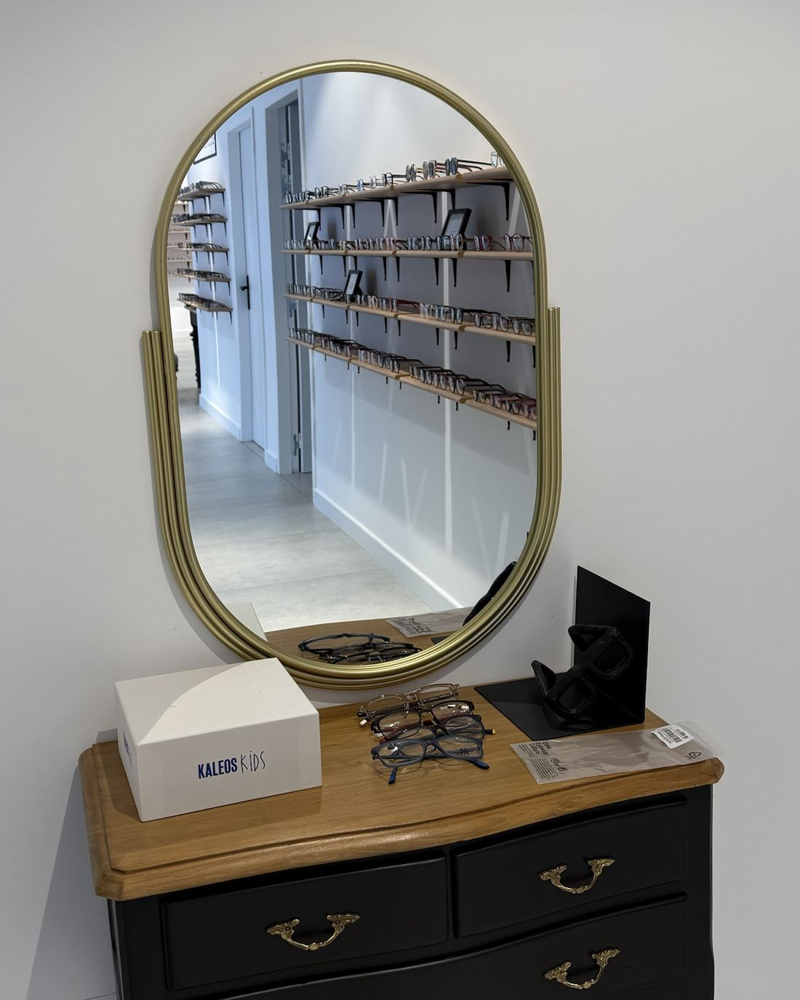
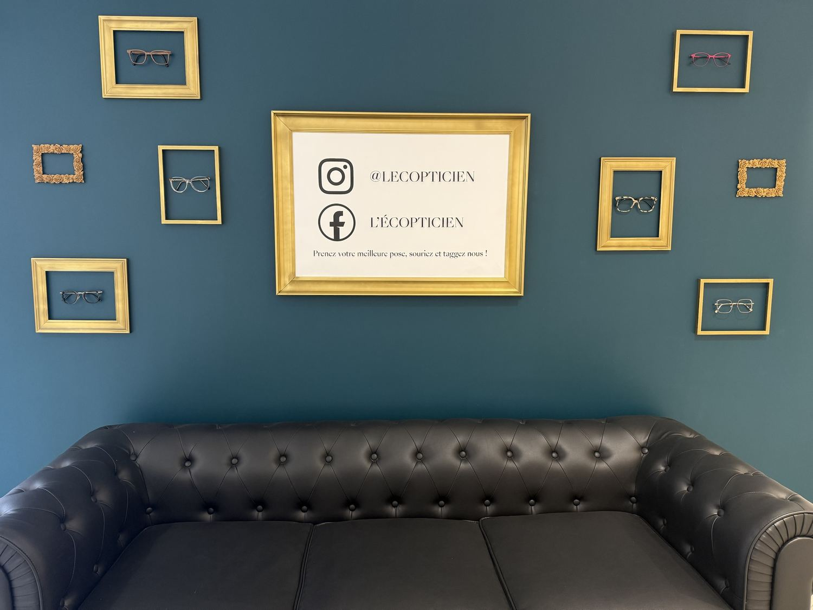
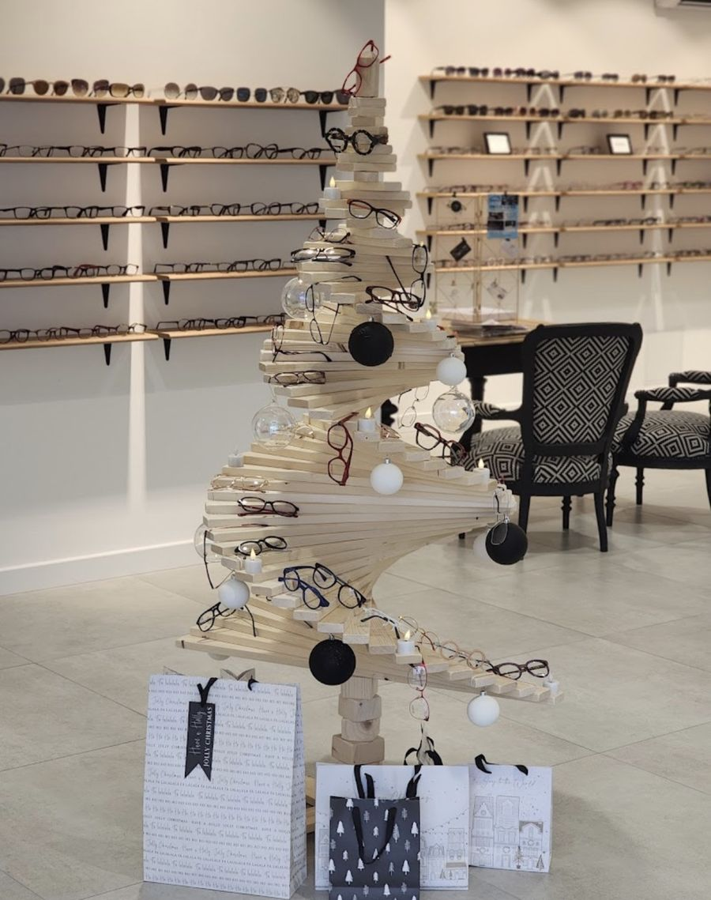
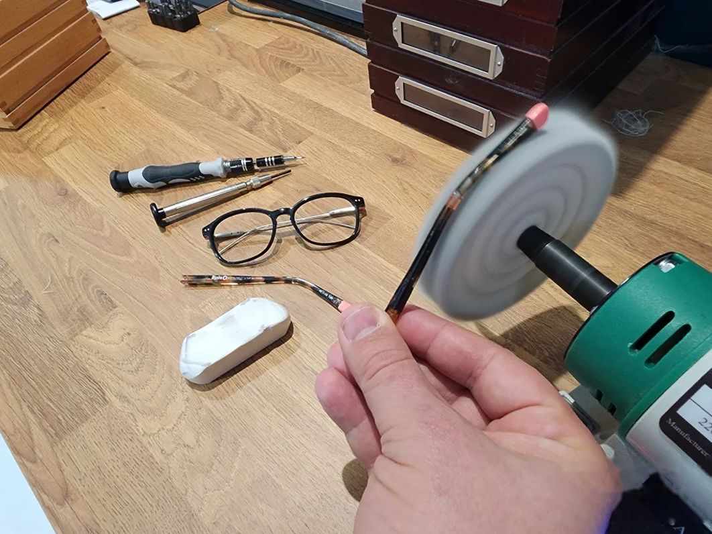
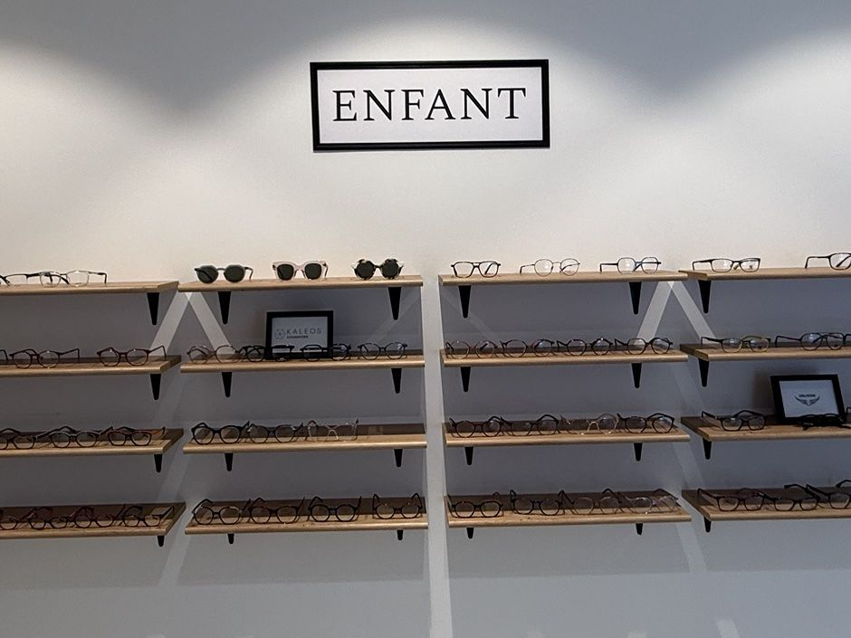
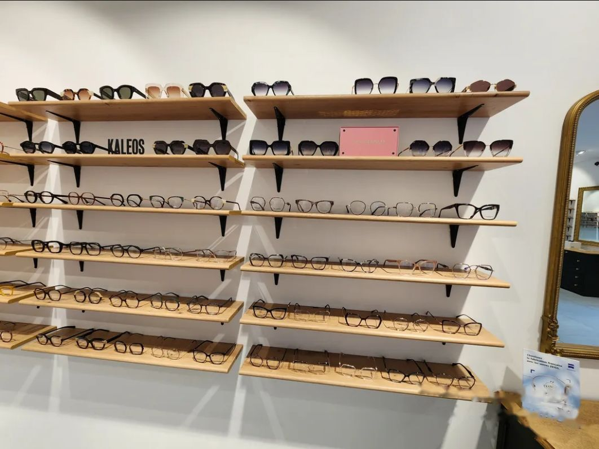
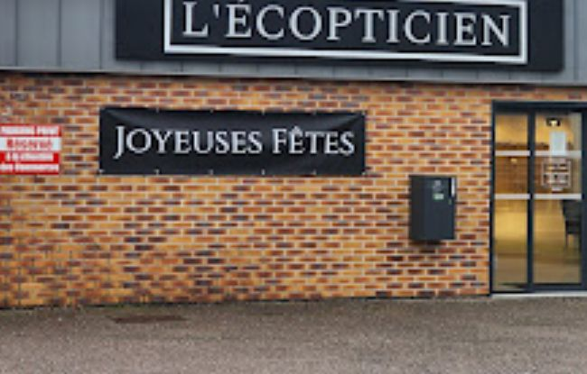
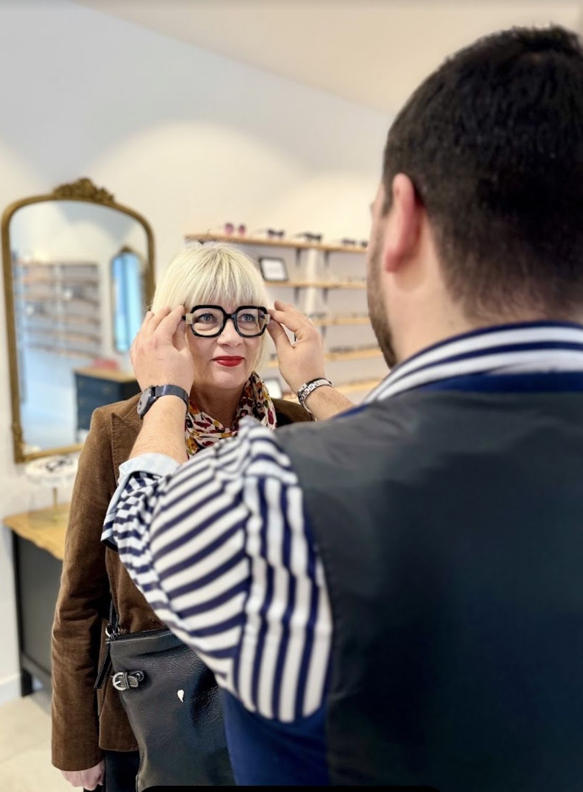
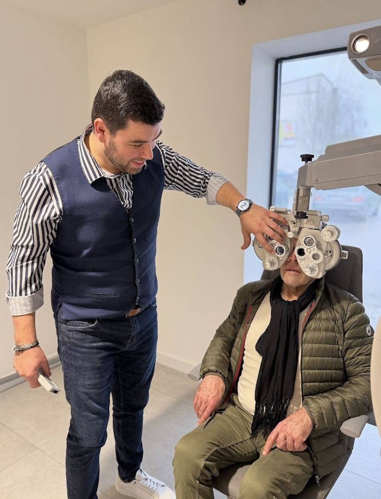

Opticien à Golbey, dans les Vosges
L’Écopticien, optique traditionnelle et reconditionnée
5,0 38 avis GoogleNous vendons des montures de grandes marques à prix serrés, et des montures remises à neuf par nos artisans lunetiers. Apportez vos anciennes lunettes et nous déduisons leur valeur de votre facture.
28 avenue de la Fontenelle, 88190 Golbey
Pourquoi « Écopticien » ?
Moins cher,
plus longtemps.
Parce que vos lunettes peuvent coûter moins cher et servir plus longtemps.
ÉCOnomique
Réduisez votre reste à charge en nous apportant vos anciennes montures. Nos opticiens estiment leur valeur et la déduisent de votre facture.
Conditions de reprise à voir en magasin.ÉCOlogique
Nos artisans lunetiers remettent des montures à neuf. Vous pouvez en choisir une plutôt que d’acheter une paire neuve.
ÉCOptique
Nous vendons aussi des montures neuves de grandes marques, à prix serrés.
Le magasin
Passez nous voir
à Golbey.
Nous présentons le magasin dans une courte vidéo. Voir la vidéo sur YouTube









Le conseil
Nous choisissons
votre monture avec vous.
Vous essayez, on regarde ensemble, et votre opticien ajuste la monture à la main sur votre visage. Vous repartez avec des lunettes qui vous vont.
- Montures neuvesgrandes marques, prix serrés
- Montures reconditionnéesremises à neuf par nos artisans
- Ajustageà la main, sur votre visage
La reprise, en pratique
Vos anciennes montures
ont encore de la valeur.
Conditions de reprise à voir en magasin.
Appeler le magasinContact
Une question sur vos lunettes ?
Appelez-nous.
03 72 73 95 43
- Lundi14h00 – 18h00
- Mardi9h00 – 12h00, 14h00 – 19h00
- Mercredi9h00 – 12h00, 14h00 – 19h00
- Jeudi9h00 – 12h00, 14h00 – 19h00
- Vendredi9h00 – 12h00, 14h00 – 19h00
- Samedi9h00 – 12h00, 14h00 – 18h00
- DimancheFermé
28 avenue de la Fontenelle
88190 Golbey